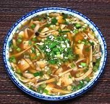

|
Fish Soup with Roasted HerbsLaos - Tome Jail Pa | ||||
| Serves: Effort: Sched: DoAhead: |
4 soup *** 1-3/4 hrs Prep |
This recipe makes 4-3/4 cups, enough for 4 soup courses or two main dish soups. It can be made ahead, but for good color, don't stir in the Leek mix until ready to serve. | |||
| Grilling small items is quick and convenient in Southeast Asia, where kitchen fires are live most of the day - not so much here in the West - see Comments. | |||||
|
8 8 ------ 1 1 2 6 1 ------ 4 3 1 ------ 1/3 1 ------ 1/4 2 1/4 |
oz oz --- in oz cl --- c c --- t T --- c c |
Fish Fillet (1) Mushrooms (2) -- Roasted Lemongrass stalk (3) Ginger Root Shallots Garlic Chili, green (4) -- Broth Kaffir Lime Leaf (5) Stock (6) Water -- Seasoning Salt Fish Sauce (7) ----------------- Leeks (8) Scallions Dill, fresh (9) |
Prep - (1 hr)
|